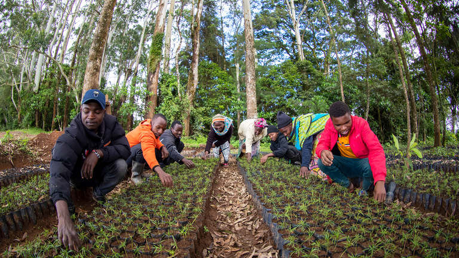

GreenWorld is dedicated to the mission of natural conservation, aiming to protect and preserve the Earth's rich biodiversity and natural ecosystems. By promoting sustainable practices, reforestation, wildlife protection, and environmental education, GreenWorld empowers communities to live in harmony with nature. The organization focuses on reducing human impact on the environment through innovative conservation projects and awareness campaigns. From protecting endangered species to restoring degraded landscapes, GreenWorld plays a vital role in ensuring a greener, healthier planet for future generations. Its commitment to environmental stewardship reflects the urgent need for collective action in safeguarding our planet’s natural heritage.
GreenWorld’s mission is to inspire and empower individuals and communities to protect and preserve the natural environment. As a non-profit organization, GreenWorld is committed to promoting sustainable living, conserving biodiversity, and combating environmental degradation through education, advocacy, and hands-on conservation efforts. The organization strives to raise awareness about the importance of forests, wildlife, clean air, and water, while encouraging eco-friendly practices and community involvement. By nurturing a deep respect for nature and fostering collective responsibility, GreenWorld aims to ensure a greener, healthier planet for present and future generations.
1. Create Awareness Campaigns
2. Engage with Local Communities
3. Develop Educational Materials
4. Set Clear Short-Term Goals
GreenWorld has taken several impactful steps toward creating environmental awareness and promoting conservation. Our team has organized successful tree plantation drives, where over 1,000 trees were planted in deforested and urban areas to restore green cover. We have led cleanliness and plastic-free campaigns in local parks, markets, and riverbanks, encouraging the community to reduce single-use plastics and adopt waste segregation at the source. To promote sustainability from a young age, we’ve conducted interactive workshops in schools and colleges, focusing on topics like biodiversity, climate change, water conservation, and eco-friendly practices. We also held nature walks and bird-watching tours, helping people connect with and understand local ecosystems. In collaboration with local authorities, we’ve helped install recycling bins in key areas and conducted awareness rallies on World Environment Day, Earth Day, and Wildlife Week. GreenWorld also launched a “Grow Your Own Food” campaign, guiding urban households and students on starting small kitchen gardens to reduce carbon footprints and promote organic living. In rural areas, we supported rainwater harvesting projects and educated farmers about eco-friendly agriculture. We’ve distributed reusable cloth bags and eco-kits to reduce plastic dependency and empower local artisans. Each activity is a step forward in our mission to build a responsible, aware, and nature-loving society.
you may also visit
contact us at
rajchaudhary100102@gmail.com